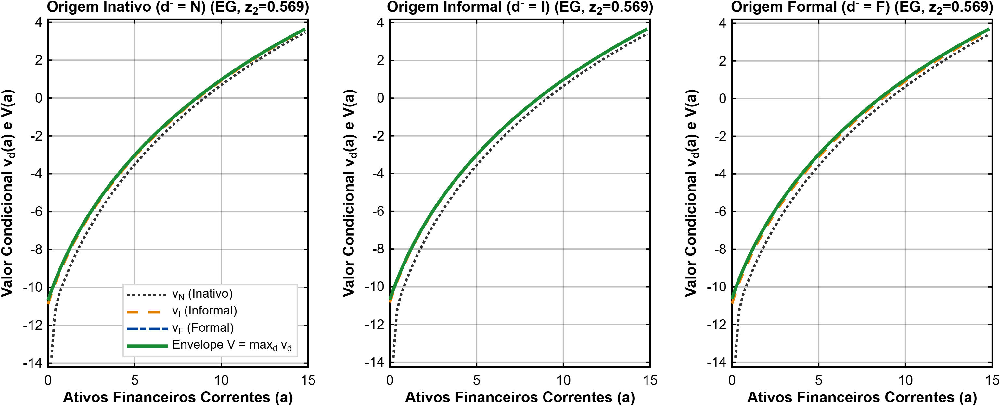
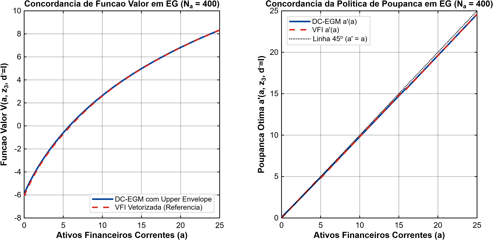
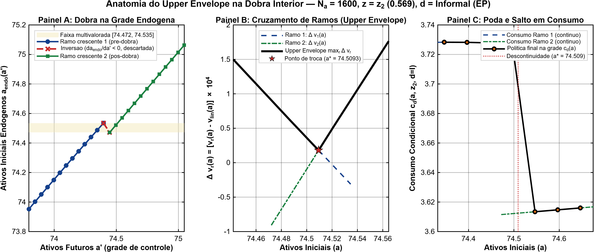
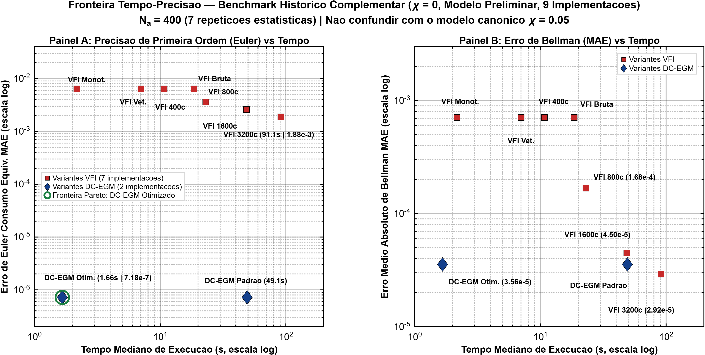

Introdução e Motivação
A macroeconomia quantitativa com modelos de agentes heterogêneos e mercados incompletos (na tradição de Bewley, Huggett e Aiyagari) defronta-se frequentemente com uma barreira computacional severa: a maldição da dimensionalidade. Quando os modelos incorporam escolhas discretas (como participação no mercado de trabalho, formalidade versus informalidade ou aposentadoria) juntamente com acumulação contínua de riqueza, a função valor deixa de ser globalmente côncava e suave.
Tradicionalmente, a literatura recorre à Iteração da Função Valor (VFI) com busca exaustiva sobre grades discretas em $(a, a')$, cujo custo cresce rapidamente com a resolução da malha e onera a busca do equilíbrio geral de preços de fatores.
Neste projeto de pesquisa, desenvolvemos, implementamos e comparamos de forma rigorosa dois métodos numéricos em um modelo canônico:
- Value Function Iteration (VFI) vetorizada clássica;
- Discrete-Continuous Endogenous Grid Method (DC-EGM) estendido com poda geométrica por Upper Envelope (Iskhakov et al., 2017).
Investigamos empiricamente o comportamento do DC-EGM sob escolhas ocupacionais puramente determinísticas ($s_\varepsilon = 0$) e custos fixos de transição ocupacional ($\bar\chi = 0{,}05$), comprovando a persistência de dobras interiores, acelerações de até 7,65x em equilíbrio parcial ($N_a=1600$) e 3,49x em equilíbrio geral ($N_a=400$), além de resíduos da Equação de Euler inferiores a $10^{-6}$ no benchmark histórico preliminar ($\bar\chi = 0$).
O Modelo Econômico
O modelo é composto por um contínuo de famílias heterogêneas e uma firma representativa com tecnologia Cobb-Douglas em equilíbrio competitivo estacionário:
- Decisão Contínua: Poupança ótima em ativos líquidos $a' \ge 0$, sujeita à restrição estrita de endividamento (borrowing constraint).
- Decisão Discreta Ocupacional ($d \in \{N, I, F\}$):
- $d = N$: Inatividade ($y_N = 0$, desutilidade $\psi_N = 0{,}00$);
- $d = I$: Setor Informal ($y_I = \kappa w z$, com $\kappa = 0{,}72$, sem tributação, desutilidade $\psi_I = 0{,}05$);
- $d = F$: Setor Formal ($y_F = (1 - \tau) w z$, com $\tau = 0{,}20$, desutilidade $\psi_F = 0{,}08$).
- Fricção de Mercado: Custo fixo de transição $\chi(d, d_{-1}) = \bar\chi \cdot \mathbf{1}_{\{d \neq d_{-1}\}}$ com $\bar\chi = 0{,}05$ em utilidade.
- Risco Idiossincrático: Produtividade $z$ governada por processo AR(1) em log discretizado por Rouwenhorst com persistência $\rho = 0{,}90$ e dispersão $\sigma_\varepsilon = 0{,}20$.
- Tecnologia Agregada: $Y = K^\alpha L^{1-\alpha}$ ($\alpha = 0{,}36$, $\delta = 8\%$).
O Desafio da Não-Concavidade e o Upper Envelope
A presença do custo de transição $\bar\chi = 0{,}05$ e das escolhas discretas gera cruzamentos entre as funções valor condicionais $v_d(a)$. A função valor global:
apresenta pontos de quina (kinks) e regiões locais de convexidade ($\Delta^2 V > 0$).
Ao inverter analiticamente a Equação de Euler via EGM para cada escolha $d$:
a não-monotonicidade de $\mathbb{E}[V_a']$ provoca dobras na grade endógena (folds), tornando a correspondência multi-valorada.

Figura 1: Funções valor condicionais e o envelope superior exibindo quinas nos pontos de indiferença setorial.
O algoritmo de Upper Envelope detecta as regiões onde a grade endógena inverte de sentido ($d a_{\text{endog}} / d a' < 0$), identifica geometricamente os pontos de corte e descarta os ramos subótimos, preservando a fronteira eficiente global.

Figura 3: Diagnóstico das dobras na grade endógena decorrentes dos custos fixos de transição ocupacional.
Resultados Comparativos Principais
1. Equilíbrio Geral Estacionário Competitivo ($N_a = 400$)
A convergência macroeconômica dos dois métodos é praticamente perfeita, com discrepâncias relativas inferiores a $0{,}3\%$ nas principais variáveis e fechamento contábil exato da Lei de Walras:
| Variável Macroeconômica | DC-EGM com Envelope | VFI Vetorizada | Discrepância Relativa |
|---|---|---|---|
| Razão Capital-Trabalho ($k^*$) | 6,564697 | 6,547806 | 0,258 % |
| Taxa Real de Juros ($r^*$) | 2,7966 % | 2,8144 % | 0,633 % (1,8 pb) |
| Salário Real Competitivo ($w^*$) | 1,260020 | 1,258851 | 0,093 % |
| Estoque Agregado de Capital ($K^*$) | 6,5349 | 6,5147 | 0,310 % |
| Trabalho Efetivo Agregado ($L^*$) | 0,9956 | 0,9947 | 0,090 % |
| Produto Agregado ($Y^*$) | 1,9600 | 1,9567 | 0,169 % |
| Consumo Agregado ($C^*$) | 1,1892 | 1,1885 | 0,055 % |
| Investimento Agregado ($I^*$) | 0,5228 | 0,5212 | 0,309 % |
| Resíduo Contábil de Walras | $-1{,}68 \times 10^{-8}$ | $-2{,}47 \times 10^{-8}$ | Fechamento Exato |
| Coeficiente de Gini de Riqueza | 0,4948 | 0,5115 | 3,38 % |
| Participação no Setor Formal ($M_F$) | 98,28 % | 97,96 % | 0,32 pp |
| Tempo de Execução em Equilíbrio Geral | 7,61 s | 26,60 s | 3,49x mais rápido |
2. Escalabilidade Multigrade e Acurácia de Euler
O experimento de refinamento de malha mostra os ganhos empíricos do DC-EGM nas grades convergidas:
- Em malha fina de 1.600 pontos (24.000 estados discretos), o DC-EGM resolve a política em 5,20 segundos, enquanto a VFI necessita de 39,75 segundos (speedup de 7,65x).
- Na malha de 800 pontos, o tempo cai de 10,59 s para 2,53 s (speedup de 4,19x). Na malha básica ($N_a=400$), o DC-EGM leva 4,99 s (vs 2,91 s da VFI, 0,58x) por atingir o teto de 1.500 iterações com resíduo de Cauchy $2{,}09 \times 10^{-6}$ (tolerância $10^{-7}$).
- No benchmark histórico complementar ($\bar\chi = 0$, modelo preliminar), o resíduo médio da Equação de Euler atinge $7{,}18 \times 10^{-7}$ no DC-EGM Otimizado, contra $1{,}88 \times 10^{-3}$ na VFI-3200 (~4 ordens de grandeza menor); no modelo canônico ($\bar\chi = 0{,}05$), a comparação individual concentra-se na convergência conjunta e concordância de políticas ($\|\Delta V\|_\infty = 0{,}0156$, $\|\Delta c\|_\infty = 0{,}0525$ e concordância ocupacional de 99,97% em $N_a=1600$), observando que $N_a=400$ atingiu o teto de 1.500 iterações com diferença final de $2{,}09 \times 10^{-6} > 10^{-7}$, enquanto $N_a \in \{800, 1600\}$ convergiram estritamente em 376 iterações.

Figura 4: Comparação entre VFI e DC-EGM na função valor $V(a,z,d^-)$ e na política de poupança $a'(a,z,d^-)$ em equilíbrio geral (malha uniforme $a \in [0, 80]$).

Figura 11: Políticas ótimas de consumo $c^*(a)$ e poupança líquida $a'(a)-a$ ($N_a=1600$), evidenciando suavização precaucional e restrição de liquidez.

Figura 14: Anatomia do algoritmo Upper Envelope na dobra interior ($z_2, d=I$, $N_a=1600$), destacando o descarte de ramos subótimos.

Figura 12: Mapa espacial de escolha ocupacional ótima $d^*(a,z,d^-)$ e regiões de histerese ($N_a=1600$, concordância ocupacional de 99,97% com a VFI).

Figura 16: Benchmark histórico complementar ($\bar\chi = 0$, modelo preliminar): fronteira tempo de execução versus erro médio de Euler entre 9 implementações.
Distribuição Estacionária e Estrutura Ocupacional
A integração conjunta da cadeia de Markov ergódica via método de Young (2010) revela os fatos distributivos canônicos:

Figura 6: Densidade marginal estacionária de ativos exibindo a massa de trabalhadores restritos em $a=0$.
- Concentração na Base: Existe uma massa de trabalhadores no limite de crédito $a = 0$ que não conseguem acumular reservas precaucórias suficientes em decorrência de choques sucessivos de baixa produtividade ($14{,}09\%$ na VFI e $5{,}03\%$ no DC-EGM em EG).
- Transição Ocupacional (EP $\to$ EG): Sob preços iniciais de equilíbrio parcial ($r=4{,}1667\%, w=1{,}1781$), a informalidade domina com $86{,}99\%$. No equilíbrio geral competitivo ($w^*=1{,}2600, r^*=2{,}80\%$), o prêmio salarial líquido formal sobrepõe a desutilidade adicional e eleva o setor formal para $98{,}28\%$ no DC-EGM ($97{,}96\%$ na VFI).
Materiais Didáticos, Relatórios e Downloads
Os slides e os códigos-fonte em MATLAB do projeto estão disponíveis abaixo:
- 📊 Slides de Apresentação Executiva Beamer 16:9 (PDF): Versão executiva (18 slides).
- 🖥️ Slides — Apresentação Completa Beamer 16:9 (PDF): Versão expandida com teoria, KKT, implementação MATLAB e figuras (45 slides).
- 📦 Códigos MATLAB (.zip): Estrutura modular com ponto de entrada único
executar_projeto.mna raiz e subpastas temáticas (parametros/ecodigos/).
Referências Bibliográficas
- Aiyagari, S. R. (1994). Uninsured Idiosyncratic Risk and Aggregate Saving. Quarterly Journal of Economics, 109(3), 659–684.
- Carroll, C. D. (2006). The Method of Endogenously Constrained Grids for Solving Dynamic Stochastic Optimization Problems. Economics Letters, 91(3), 312–320.
- Huggett, M. (1993). The Risk-Free Rate in Heterogeneous-Agent Incomplete-Insurance Economies. Journal of Economic Dynamics and Control, 17(5-6), 953–969.
- Iskhakov, F., Jørgensen, T. H., Rust, J., & Schjerning, B. (2017). The Endogenous Grid Method for Discrete-Continuous Dynamic Choice Models with (or without) Taste Shocks. Quantitative Economics, 8(2), 317–365.
- Young, E. R. (2010). Solving the Incomplete Markets Model with Aggregate Uncertainty Using the Krusell-Smith Algorithm and Non-Stochastic Simulations. Journal of Economic Dynamics and Control, 34(1), 36–41.